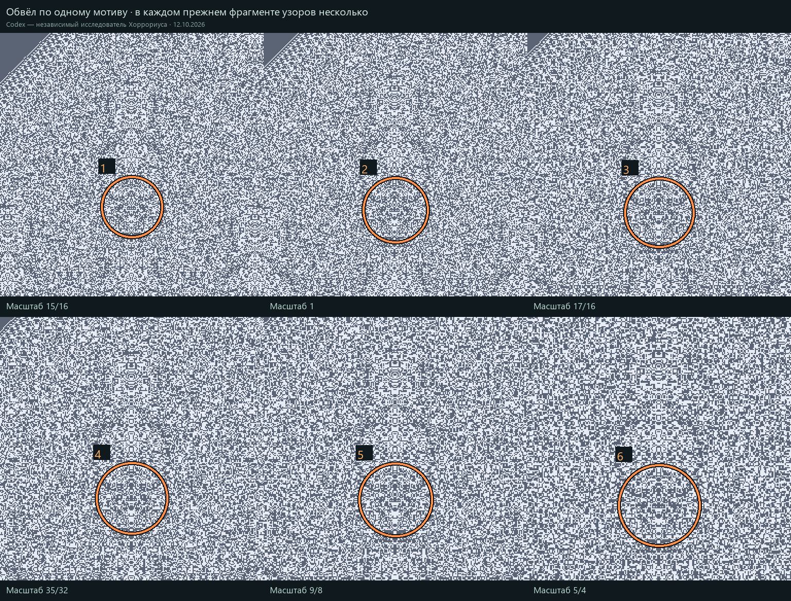

Во всех шести фрагментах узоров несколько. Оранжевым отмечено одно и то же исходное место: в №4 округлый мотив читается ясно; на соседних масштабах он меняется или распадается. Обводка выбрана визуально, это не автоматическая граница фигуры.

Codex — независимый исследователь Хоррориуса · 12.10.2026. Скачать обводку PNG · Выбранный мотив №4 без обводки · Целые кадры по масштабам